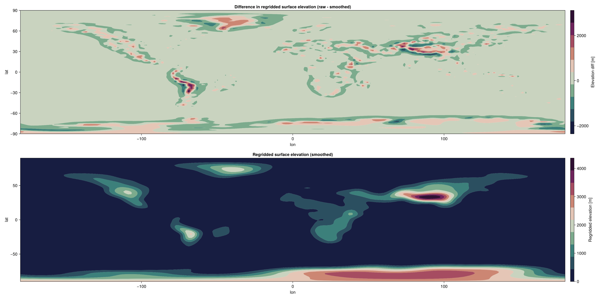

Topography in ClimaAtmos
Topography enters ClimaAtmos through the grid. Two ingredients are needed: a surface elevation field $z_s$ on the horizontal space, and a warping rule that carries that elevation into the interior, so that the lowest coordinate surface follows the terrain and higher ones relax back to flat. The horizontal mesh is untouched; only the vertical placement of levels changes.
The topography configuration key selects the elevation, and mesh_warp_type selects the warping. With the default topography: "NoWarp", the grid is built flat, and the warping choice has no effect.
Surface elevation
Earth orography
Earth topography is regridded from the ETOPO2022 ice-surface elevation dataset onto the spectral element horizontal grid, by linear interpolation through the ClimaUtilities.jl SpaceVaryingInput tool.
- Dataset: ETOPO Global Relief Model
- ClimaArtifact: earth_orography
The file examples/topography_spectra.jl generates such regridded fields, and their spectra, on user-defined horizontal spaces. For output from an existing simulation, the orog diagnostic holds the regridded elevation the run actually used.
Analytic profiles
The remaining profiles are analytic, and are used for mountain-wave and baroclinic-wave test cases. Each is a type carrying its own parameters, so the same parameters are available to the analytic solutions in steady_state_solutions.jl.
topography | Type | Elevation | Geometry |
|---|---|---|---|
"Cosine2D", "Cosine3D" | ClimaAtmos.CosineTopography | $h_{max} \cos(2\pi x/\lambda)$, times $\cos(2\pi y/\lambda)$ in 3D | Box |
"Agnesi" | ClimaAtmos.AgnesiTopography | $h_{max} / [1 + ((x - x_c)/a)^2]$ | 2D box |
"Schar" | ClimaAtmos.ScharTopography | $h_{max} \exp[-((x - x_c)/a)^2] \cos^2(\pi (x - x_c)/\lambda)$ | 2D box |
"DCMIP200" | ClimaAtmos.DCMIP200Topography | 2 km cosine bell modulated by cosine ridges, inside a great-circle radius $3\pi/4$ of the equator at 270° longitude | Sphere |
"Hughes2023" | ClimaAtmos.Hughes2023Topography | Two 2 km ridges at 45°N, at 72° and 140° longitude, super-Gaussian in latitude and Gaussian in longitude | Sphere |
The Schär profile carries both a resolved-scale and a small-scale response, which makes it a test of the warping rather than of the elevation alone.
Smoothing
Unsmoothed elevation puts power at the grid scale, where the discretization cannot represent it and where the terrain-following coordinate is most strongly deformed. Both are sources of noise, so the elevation is smoothed by Laplacian diffusion of the surface field before it is handed to the warp (ClimaCore.Hypsography.diffuse_surface_elevation!).
Earth topography is always smoothed. The diffusivity follows a fixed diffusion Courant number of 0.05, $\kappa = 0.05 \, \Delta h^2$ with $\Delta h$ the horizontal node spacing, and the iteration count is set by the topography_damping_factor configuration key $f_d$,
\[n_{iter} = \mathrm{round}\left[ \frac{\log f_d}{0.05} \right] ,\]
which is 32 iterations at the default $f_d = 5$. Raising the factor damps the smallest resolved scales more. Negative elevations are then clipped to zero, so the ocean floor does not warp the grid below sea level.
Analytic profiles are smoothed only when topo_smoothing is set, and then with the ClimaCore defaults rather than the Courant-number rule above. Setting topo_smoothing alongside topography: "Earth" changes nothing, because Earth topography takes the first branch either way.
The plots below show the regridded Earth elevation on a cubed sphere with 16 and 64 elements per panel edge, unsmoothed and smoothed.
Elevation data (elems per panel = 16)

Elevation data (elems per panel = 64)

The terrain-following vertical coordinate
The warp carries the surface elevation into the interior by mapping the reference height of each level onto a physical height. ClimaCore provides two maps, and Hybrid grids and generalized coordinates gives both formulas, the stretching rules, and the metric terms that result: the Gal-Chen map [89], in which the terrain displacement decays linearly to zero at the model top, and the SLEVE map [90], in which it decays as a hyperbolic sine and is switched off above a cutoff height, in the single-scale form ClimaCore implements.
ClimaAtmos selects between them with mesh_warp_type:
mesh_warp_type | ClimaCore adaption | Parameters |
|---|---|---|
"SLEVE" (default) | ClimaCore.Hypsography.SLEVEAdaption | sleve_eta (cutoff $\eta_h$, default 0.7) and sleve_s (decay scale $s$, default 10) |
"Linear" | ClimaCore.Hypsography.LinearAdaption | none |
Levels above $\eta_h z_t$ are flat under SLEVE. As $s$ grows, the decay approaches a linear one that vanishes at $\eta_h$; smaller $s$ confines the terrain influence closer to the surface. Grid construction fails when $s z_t$ does not exceed the maximum surface elevation, since the mapping is then no longer monotonic. Because the implementation applies one decay scale to the full elevation field rather than splitting it into large- and small-scale parts as [90] do, the smoothing above limits the small-scale deformation aloft.
The reference levels themselves are stretched with ClimaCore.Meshes.HyperbolicTangentStretching when z_stretch is true (the default), anchored on the lowest-layer thickness dz_bottom, and uniform otherwise.
Consequences for the discretization
Over terrain, the coordinate surfaces are sloped, and the ClimaCore page linked above derives what that does to the bases and metric terms. Three consequences show up in ClimaAtmos's tendencies.
Impenetrability is a condition on the contravariant velocity. The prognostic vertical velocity is the covariant component $u_3$ on faces, but the flow through a coordinate surface is the contravariant component $u^3 = u_h^3 + g^{33} u_3$, where $u_h^3$ is the third contravariant component of the horizontal velocity and is nonzero wherever the surface is sloped. Setting $u^3 = 0$ at the surface therefore requires
\[u_3 = - \frac{u_h^3}{g^{33}} ,\]
which is applied every time the precomputed quantities are set, to the grid mean and to each PROPHET updraft. The same condition is applied at the model top. Over flat ground, $u_h^3$ vanishes and the condition reduces to $u_3 = 0$.
Horizontal operators act along coordinate surfaces. Hyperdiffusion and the viscous sponge use horizontal derivatives taken along the terrain-following surfaces, not along surfaces of constant height; see Hyperdiffusion. They are numerical operators, so this is acceptable, but their effect acquires a vertical component near steep terrain.
The pressure gradient is computed as a deviation from a reference state. Differencing a large hydrostatic pressure along a sloped coordinate surface is the classic source of spurious pressure-gradient force over terrain. ClimaAtmos expresses the force as a departure from a hydrostatically balanced reference state, which reduces that error [18, 19]; see Governing Equations.
Checking a run over terrain
Configurations with check_steady_state: true compare the simulated flow against the analytic steady-state solution for flow over the same mountain, available for the Agnesi, Schär, and cosine profiles with a ConstantBuoyancyFrequencyProfile initial condition and linear warping. The uapredicted, uaerror, and companion diagnostics hold the prediction and the error. The mountain-wave test configurations plane_schar_mountain_float64_test.yml and its Float32 counterpart use this path; the global cases baroclinic_wave_topography_dcmip_rs.yml, baroclinic_wave_hughes2023.yml, and baroclinic_wave_equil_earth.yml exercise the spherical profiles.
Topography is also an input to the orographic gravity-wave drag, which derives subgrid-scale orographic statistics from the same elevation dataset.
Where this is implemented
| Concept | Source |
|---|---|
| Elevation profiles and warping types | src/topography/topography.jl |
| Analytic steady-state solutions | src/topography/steadystatesolutions.jl |
| Regridding, smoothing, and warp construction | src/simulation/grids.jl |
| Configuration dispatch | src/config/type_getters.jl |
| Impenetrability conditions | src/cache/precomputed_quantities.jl |
| Warping and surface diffusion | ClimaCore.Hypsography; see Use terrain-following coordinates |
| Model types | ClimaAtmos.AbstractTopography, ClimaAtmos.MeshWarpType |
See Configuration Options for the keys named here and Grids for the grid constructors that take them.